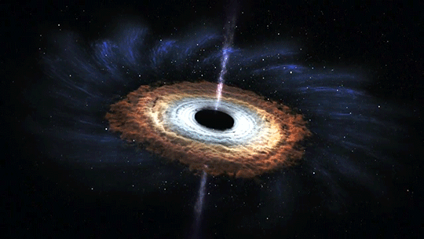

جهان سازمانی بهطور کامل پویا است. این جهان روزی آغاز شد. شاید با یک انبساط بزرگ ناگهانی مادّه؛ و ممکن است روزی پایان یابد. تمامی آنچه در کیهان وجود دارد در وجود ما نهادینه شده است! هر کدام ازما شگفتی برابر با کل کیهان داریم، ما در مقابل این جهان مسئولیم.

جَهان اشاره دارد به زمین و زندگی و تمدن انسانی روی آن. همچنین واژه جهان برای اشاره به کیهان و کل هستی نیز کاربرد دارد. از واژهٔ جهان برای اشاره به هر مجموعهٔ بزرگ نیز استفاده میشود. برای نمونه زبان جهانی، حکومت جهانی و جهان ادبیّات. از نظر ریشه، واژهٔ جهان دگرگونشده واژهٔ گیهان پهلوی است. واژههای کیهان و گیتی نیز از همان ریشه آمدهاند.جمعیت جهان به جمعیت انسانها اشاره دارد؛ به همین ترتیب، اقتصاد جهانی به اقتصادهای همه جوامع انسانی یا کشورها در کنار هم گفته میشود. عمر جهان نیز برابر با ۰٫۱۷ ± ۱۳٫۷۵ بیلیون سال است.
سیّارات به دور ستارهها در حال گردشند. کهکشانها میچرخند و دنبالهدارها و سیّارکها در منظومهٔ خورشیدی در حال حرکت بر روی مدار خود هستند. عناصر، اتمها، مولکولها و ذرّات پیوسته بر یکدیگر اثر میگذارند و تغییر میکنند. موجهای الکترومغناطیسی همه جا هستند (ما برای دیدن آنها باید بیرون از محوّطهٔ وجودیشان باشیم) ممکن است همهٔ جهان از ماده سیاه ساخته شده باشد که ما در این مورد مطمئن نیستیم. رایجترین نظریّه در مورد خلق جهان تئوری مهبانگ یا انفجار بزرگ است.
در حیطه علم و دانش، وجود اجسام از ماهیت خودشان مشتق نمیشود وبا خلقت و اراده خداوند تعیین میشود. تضاد موجود مابین بودن و ماهیت نشانگر این است که دوگانگی جهان خلقت تنها از راه خدا حل شدنی است. تجربه گرایی وجود حقایق مفردی را تشخیص میدهد که قابل مشاهده علوم تجربی باشند و نه مشتق از دیگری. یکی از مهمترین و اساسیترین موضوعات در هستیشناسی، تعریف وجود است، مطالعه فلسفی از ماهیت بودن، وجود داشتن و کل واقعیت به علاوه دستهبندی موجودات و روابطشان. هستیشناسی که خود قسمتی از فلسفه علوم ماورا، طبیعت است به سوالاتی دربارهٔ این که چه موجودات و نهادهایی وجود دارند یا میتوان گفت که هستند، میپردازد و اینکه چنین موجوداتی ایا قابل دستهبندی در یک سلسله مراتب و زیرمجموعه ان با در نظر گرفتن وجه تشابه و تمایزشان هستند یا نه.


زمین سومین سیارهٔ سامانهٔ خورشیدی است که در فاصلهٔ۱۴۹٬۶۰۰٬۰۰۰کیلومتری از ستارهٔ خورشید قرار دارد. از نظر واژهشناسی ایرانی، زم در زبان اوستایی به معنای سرد بودهاست که با پسوند ین، واژۀ زمین را به معنای جسم سرد به وجود آوردهاست. این سیاره چگالترین به دلیل دارا بودن منبع وسیع آهن و فلزات دیگر و از نظر بزرگی پنجمین سیاره از هشت سیارهٔ سامانهٔ خورشیدی است. همچنین در میان چهار سیارهٔ سنگی گردان به دور خورشید تیر، ناهید، زمین و مریخ زمین بزرگترین آنها است. گاهی از آن با نامهای جهان و سیارهٔ آبی نیز یاد میشود. نام لاتین آن Terra است. در سامانهٔ خورشیدی، فاصلهٔ زمین تا خورشید بین فاصلهٔ زهره یا ناهید تا خورشید و فاصلهٔ مریخ یا بهرام تا خورشید است. زمین جزو سیارات داخلی سامانهٔ خورشیدی بهشمار میآید. زمین ششمین جسم در سامانه خورشیدی بر پایهٔ جرم و حجم میباشد. نزدیک به ۴٫۵۴ میلیارد سال به صورت دقیق تر ۰٫۰۰۰۶ ± ۴٫۵۶۷۲ میلیارد سال از پیدایش زمین میگذرد و زندگی بر روی سطح آن در طول یک میلیارد سال پدیدار گشتهاست. هماکنون زمین خانهٔ میلیونها گونه از جانداران است که انسان یکی از آنها است. زیستکرهٔ زمین با گذر زمان جو زمین و دیگر شرایط فیزیکی و شیمیایی این سیاره را دچار دگرگونیهای شگرفی کردهاست و محیطی را فراهم کردهاست تا جانداران زنده بتوانند به رشد و زیستزایی بپردازند. همچنین در اثر این دگرگونیها لایهٔ اوزون به دور این سیاره تشکیل شدهاست، لایهای که با کمک میدان مغناطیسی زمین مانع از ورود پرتوهای آسیبرسان خورشید میشود و به این ترتیب اجازه میدهد در زمین زندگی ادامه یابد.


یک شهابسنگ قطعهٔ جامدی از بقایای جامانده از اجرامی مانند یک ستاره دنبالهدار، سیارک یا شهابواره است که در اصل در فضای بیرونی شکل گرفته و توانسته پس از گذر از جو و تحمّل تأثیر آن، بر روی سطح زمین یا یک سیارهٔ دیگر انتقال یابد. هنگامی که جرمی به جو وارد میشود، عوامل گوناگونی مانند اصطکاک، فشار و تعامل شیمیایی با گازهای اتمسفری، باعث گرم شدن جرم و انتشار آن انرژی میشوند. این جرم سپس به یک شهابواره تبدیل میشود و برای زمان کوتاهی یک آذرگوی را تشکیل میدهد که همچنین به عنوان یک شهاب ثاقب یا ستارهٔ در حال سقوط دیده و شناخته میشود اخترشناسان نمونههای درخشان این پدیده را آذرگوی مینامند. شهابسنگهایی که در ورود خود تأثیر جو را تحمّل کردهاند، اندازههای بسیار متفاوتی دارند. برای زمینشناسان، یک آذرگوی شهابسنگی است که به اندازهٔ کافی بزرگ باشد تا بتواند یک دهانه برخوردی ایجاد کند. روزانه حدود ۵۰ تن شهابسنگ وارد جو زمین میشود و بیشتر آنها در لایه مزوسفر تبخیر میشوند. شهابسنگها بیشتر از سنگ و فلز تشکیل شدهاند. این اجرام هنگامی که وارد جو زمین میشوند به دلیل قطر زیادشان از جو میگذرند و دهانهها و عوارض گوناگونی را از خود بر جای میگذارندبرای نمونه دهانهٔ بارینجر در آریزونا و دهانهٔ وردفورت در آفریقای جنوبی. اهمیّت مطالعهٔ شهاب سنگها جهت تعیین سن زمین، منظومه شمسی و در نهایت تعیین سن کل کیهان نهفتهاست. به علاوه میتوان از آنها جهت تعیین ترکیب شیمیایی بخشهای مختلف سیارهٔ زمین و سایر سیارههای سنگی استفاده کرد. فرایندهایی را که منجر به تشکیل این سیارهها شدهاند و حتی فرایندهای تشکیل هسته، پوستهٔ اولیه، فرایند تفریق عنصری در گوشتهٔ اولیّه که فرایند مهمّی چون تشکیل حیات است

بیشتر سنگهای آسمانی دست کم مقداری فلز آهن دارند (در واقع آلیاژی از آهن و نیکل). میتوان درخشش فلز را در سطوح شکستهٔ آنها دید. سنگهای آسمانی بهطور کلی همواره مقداری فلز دارند و بسته به مقدار فلز آنها در سه گروه دستهبندی میشوند: سنگهای آسمانی فلزی، که ۹۸ درصد از فلز ساخته شدهاند؛ سنگهای آسمانی ، که دارای ۵۰ درصد فلز و ۵۰ درصد سنگ هستند؛ سنگهای آسمانی سنگی، که دارای رگههای فلزی کوچکی هستند. بسیاری از سنگهای آسمانی، به ویژه شهاب سنگهای فلزی، بسیار سنگینتر و چگالتر از سنگهای زمینی هستند. چگالی فلز آهن در حدود ۸ گرم بر سانتیمتر مکعب است، چنانکه بیشتر سنگهای آسمانی دارای چگالی بالاتر از ۳٫۳ گرم بر سانتیمتر مکعب هستند. تنها چگالی شمار کمی از سنگهای زمینی، البتّه به جز سنگهای معدن فلزی، بالاتر از این است، که آنها هم بهطور نوعی اکسید آهن (مانند سنگ آهن مغناطیسی یا هماتیت) هستند. بیشتر سنگهای آسمانی دارای مقداری آلیاژ آهن - نیکل هستند و به آسانی یک آهنربا را به سوی خود میکشند. شما میتوانید به آسانی با یک آهنربا این ویژگی را آزمایش کنید. یک آهنربا بیگمان به سنگهای آسمانی خواهد چسبید به شرط آن که دست کم دارای مقداری فلز باشند. برخی از شهاب سنگها مانند گونهٔ سنگی آنها تنها دارای مقدار کمی فلز هستند با این وجود یک آهنربای آویخته با ریسمان را به سوی خود میکشند۰ اما استثنائاتی نیز در این میان بچشم م خورند به عنوان مثال تعدادی از شهاب سنگهای پیدا شده از نوع لونار (ماه) یا حتی شهاب سنگهای مریخی هیچ عکس العمل مغناطیسی در برابر آهنربا نداشتند
براساس نظریه ریسمان ها، اگر یک ابر میکروسکوپ داشته باشیم و بتوانیم به دقت به قلب یک الکترون بنگریم، یک ذره نقطه ای، بلکه ریسمانی مرتعش را مشاهده خواهیم کرد. ( این ریسمان بسیار کوچک است، به اندازه طول پلانک برابر با ۳۳- ^۱۰ سانتی متر، میلیاردها بار کوچکتر از یک پروتون، بنابراین توان ذرات زیراتمی بصورت نقطه ای دیده می شوند. ) اگر بخواهیم این ریسمان را به ارتعاش در آوریم، صدای تغییر خواهد کرد؛ مثلا الکترون ممکن است به یک نوترینو تبدیل شود. و اگر دوباره آن را به ارتعاش در آوریم، ممکن است به یک کوارک تبدیل می شود. در حقیقت اگر ریسمان را با شدت های مختلف به لرزه در آوریم، می توانیم آن را به هر کدام از ذرات زیر اتمی شناخته شده تبدیل کینم. به این ترتیب نظریه ریسمان ها می تواند به راحتی این موضوع را توضیح دهد که چرا تعداد ذرات زیر اتمی تا به این حد زیاد است. آنها چیزی نیستند جز نت های متفاوتی که می توان بر روی ابر ریسمان نواخت. در حقیقت تمام زیر ذرات موجود در جهان را می توان بصورت ارتعاشات یک ریسمان نشان داد که « هارمونی » های ریسمان همان قوانین فیزیک هستند.


خالق پروژه ی "نیمه شب اودیسه" استرالیایی دارای دکترای موسیقی اهل کویینزلند و از سال 2007 مشغول فعالیت است. علاوه بر کیهان او از طبیعت و مرگ نیز برای ارایه آثارش بهره میبرد.

مدیر پروژه "زوال مطلق" آلمانی کارشناس ارشد صدابرداری که از سال 2004 به همراه دامناتیو ممورای در حال فعالیت هستند طبیعت و فلسفه درون مایه آثارشان است.

موسس بند تریو "غریضه ی خالص زمینی" ایتالیایی. موسیقیدان و دارای دکترای فیزیک کوانتومی که از سال 2009 در گروه مشغول فعالیت هستند. درون مایه آنها متافیزیک سیارات و سیاه نمایی جهان است.

موسیقیدان اهل روسیه و تنها عضو پروژه شخصی خود با نام "سحابی جبار" که از سال 2013 فعالیت و پژوهش پیرامون تاریکی و کیهان را دنبال میکند. آثار او مخاطب را در اتمسفری تاریک شناور میکند.

اخترشناس و موسیقیدان سوییسی که در سال 2006 پروژه شخصی خود با نام "آفتاب کور" را تاسیس کرد او همچنین موسس پروژه دیگری با نام "فضای تاریک" با مضمون اگزیستانسیالیسم و فلسفه نیز میباشد.

یکی از مرموزترین موسیسقیدان های امریکایی که از سال 2005 با پروژه ی "ستاره ی لومینوس" کار خود را آغاز کرد موسیقی او کیهانی و سنگین و ناشناخته است او دارای برد تخصصی روانشناسی نیز میباشد.
جهان چگونه گسترش می یابد
قدرتمندترین شیء در جهان
جستجوی زندگی در فضا
سفری در فضا و زمان
به گزارش بیگ بنگ، چقدر احتمال دارد ناگهان محو شوید و سپس دوباره در طرف دیگر دیوار ظاهر؟ براساس نظریه کوانتوم، احتمال کوچک ولی در عین حال قابل محاسبه ای وجود دارد که این اتفاق بیفتد. یا مثلا احتمال اینکه ما در اتاق خود از هم پاشیده و بر روی مریخ دوباره سر هم شویم. در واقع این خاصیت الکترون های سازنده ی بدن شماست که خاصیت این را دارند که یک لحظه در چندین مکان مختلف در جهان هستی باشند. البته این احتمال چنان کوچک است که برای رخ دادن آن باید زمانی بیشتر از حتی عمر جهان صبر کنیم. در نتیجه در زندگی روزمره ما می توان چنین رویدادهای غیر محتملی را نادیده گرفت. در حالی که در سطوح زیر اتمی، چنین احتمالاتی برای عملکرد دستگاههای الکترونیکی، کامپیوترها و لیزرها، بسیار تعیین کننده و حیاتی محسوب می شوند. این احتمالات را نخستین بار اروین شرودینگر با معادلات موج الکترون بیان نمود. به این معنی که الکترون تا زمانی که دیده نشود مانند موج است و مکان های متفاوتی در هر کجای هستی دارد، اما هنگامی که دیده شد معادلات موج آن از هم پاشیده و به صورت ابری از احتمال بسیار قوی در مکان مورد نظر آرام می گیرد. الکترون زمانی در مکانی خاص قرار می گیرد که ناظری آن را ببیند، البته صحیح است که بر اساس اصل عدم قطعیت مکان دقیق الکترون مشخص نمی شود اما در مقیاس ماکروسکوپی زمانی که احتمال وجود الکترون در مکانی زیاد می شود یعنی در همان حوالیست. طبق محاسبات برخی فیزیکدانان در کیهان شناسی کوانتومی جهان از افت و خیز کوانتومی خلاء سر بر آورده است، یعنی بصورت حبابی کوچک در کف فضا- زمان. بیشتر بچه جهانها در کف فضا- زمان دارای بیگ بنگ هستند و پس از آن فورا داری بیگ کرانچ می شوند. به همین دلیل است که ما هرگز آنها را نمی بینیم، زیرا آنها بسیار کوچک هستند و عمر کوتاهی دارند. یعنی « هیچ چیز » جوشان از بچه جهان هایی است که به وجود می آیند و از بین می روند، ولی در مقیاسی آنچنان کوچک که با دستگاههای ما آشکارسازی نمی شوند.  اما نکته ی شگفت انگیز و عجیبی وجود دارد: در لحظه ی بیگ بنگ، جهان بسیار کوچک تر از الکترون بود. هر فیزیکدانی با این موافق است که الکترونها باید کوانتیده باشند، یعنی آنها با یک معادله ی موج احتمالاتی( معادله دیراک ) توصیف شوند و می توانند در حالت هایی موازی وجود داشته باشند. بنابراین اگر الکترون ها باید کوانتیده باشند و اگر جهان زمانی کوچکتر از الکترون بوده است، آنگاه جهان نیز باید در حالت های موازی وجود داشته باشد، نظریه ای که بطور طبیعی با رهیافت « چند جهانی » ختم می شود. در این نظریه، جهان به سادگی در حالت های موازی وجود دارد که همگی در یک تابع موج اصلی موسوم به « تابع موج جهان » تعریف می شوند. در واقع اگر کل جهان بخشی از یک تابع موج باشد، آنگاه دیگر نیازی به یک ناظر کیهانی، کسی که از بیرون جهان بتواند کل جهان را به یکباره مشاهده کند نیست. زیرا اگر الکترون و ذرات می توانند در یک لحظه چندین مکان داشته باشند پس احتمالا ذره ی سازنده ی جهان ما نیز باید در آن لحظه دارای چندین مکان می بود. بنابراین امکان دارد این ذرات جهان های موازی دیگری را نیز به وجود آورده باشند، جهان هایی که احتمال وجود آنها در هر جایی از کائنات ممکن است.
 دانشمندان همیشه این احتمال را درنظر میگیرند که کهکشانها میتوانند سیاهچالههای مرکزی خود را نابود کنند، ولی هیچ مدرکی برای اثبات این مدعا پیدا نکردند. تا اینکه در سال ۲۰۱۷ یک کهکشان شگفت انگیز به نام ۳C186 کشف شد. ۳C186 از ادغام دو کهکشان بوجود آمد و برخلاف سایر کهکشانها که بر اثر ادغام بوجود میآیند، ظاهر بسیار پایداری داشت. شگفتی واقعی هنگامی رخ داد که محققانی که این سیاهچاله غول پیکر را در مرکز این کهکشان جستجو میکردند، چیزی پیدا نکردند.
این سیاهچاله هنگامی پیدا شد که ۳۵۰۰۰ سال نوری از مرکز کهکشان ۳C186 فاصله داشت. همانطور که خوشههای دو ستاره با هم برخورد میکنند، سیاهچالههای مراکز این کهکشانها در هم ادغام شده و یک سیاهچاله غول پیکر ایجاد کرده بودند. این ادغام احتمالاً امواج گرانشی بسیار قدرتمندی ایجاد کرده بود که باعث خروج سیاهچاله از مرکز کهکشان شده بود.
دوری سیاهچاله از مرکز کهکشان یک مورد بسیار عجیب است زیرا برای جابجایی سیاهچاله، میزان انرژی برابر با انفجار ۱۰۰ میلیون ابرنواختر مورد نیاز است. مشخص نیست که چه اتفاقی افتاده، ولی هرچه که بوده نیرویی بسیار قدرتمندتر در قلمرو آن سیاهچاله بوده و بر آن غلبه کرده است. این سیاهچاله منحصر به فرد و عظیم الجثه با سرعت فوق العادهای در حال گسترش است. در سال ۲۰۱۸ فیزیکدانها نظریه دیگری درباره نابودی زمین توسط سیاهچالهها بصورت نظری مطرح کردند. اخیرا جامعه علمی به خاطر کشف امواج گرانشی بسیار خوشحال است. به نظر عجیب میآید ولی واقعیت این است که امواج گرانشی نیروی مرگباری هستند.
نظریه جدید پیشنهاد میکند که امواج گرانشی حاصل از یک برخورد (ثبت امواج گرانشی حاصل از بلعیدن یک ستاره نوترونی توسط سیاهچاله) با انرژی بالا مانند یک حباب حرکت میکنند. با سرعت نور رشد کرده و بسیار بزرگ میشوند تا اینکه سطح آن مسطح شود. بدترین اتفاق در این حالت، این است که دو حباب در آن سطح به همدیگر برخورد کنند که در این صورت فضا و زمان به داخل سیاهچاله کشیده خواهند شد. اگر این اتفاق در نزدیکی زمین رخ دهد، فاجعه بار خواهد بود زیرا این امواج گرانشی میتوانند یک سیاره را خرد کنند.
در ۱۴ سپتامبر سال ۲۰۱۵، تداخل سنج لیزری امواج گرانشی(لیگو) یک سری امواج گرانشی حاصل از ادغام دو سیاهچاله را ثبت کرد که یکی ۳۶ برابر و دیگری ۲۹ برابر خورشید جرم داشتند. انتظار می رود این پدیده تاریک باشد، اما تلسکوپ فضایی فرمی بعد از ۰.۴ ثانیه انفجار امواج گاما را نیز شناسایی کرد.
تحقیقات جدید نشان میدهد که این انفجار اتفاق افتاده است، زیرا دو سیاهچاله در یک ستاره ی تک و عظیم به وجود آمدند و از بین رفتند که مرگ ستاره انفجار امواج گاما را به وجود آورده است. آوی لئوب، از مرکز اخترشناسی هاروارد (cfa)میگوید:« در حالت عادی، وقتی ستاره ای[ با جرمی ۲۰ برابر جرم خورشید ما] از بین می رود، رمبش کرده و به یک سیاهچاله تبدیل می شود، در این حالت اگر ستاره به سرعت در حال چرخش باشد، هسته اش احتمالا به شکل دَمبِل در می آید و به شکل دو خوشه، شکسته میشوند. در واقع هرکدام از این خوشه ها خود به یک سیاهچاله ی تکی تبدیل میشوند.
یک ستاره ی سنگین و عظیم پیش از تبدیل شدن به سیاهچاله معمولا به دو ستاره ی کوچک تر تبدیل میشود، این دو ستاره با سرعت زیاد به دور هم بمیچرخند، طوری که انتظار میرود ستاره ی ادغام شده نیز بسیار سریع بچرخد. پس از اینکه جفت سیاهچاله شکل گرفت، پوسته ی بیرونی ستاره به سمت سیاهچاله هجوم میبرد. با توجه به رویداد امواج گرانشی دو سیاهچاله و انفجار امواج گاما، سیاهچاله های دو قلو باید نزدیک هم به دنیا آمده باشند. با تقسیم بندی اصلی و ادغام شده ای به اندازه زمین که در چند دقیقه به وجود آمد. سیاهچاله های تازه شکل گرفته از طریق موادی که به درونش میریزد تغذیه میشود و در هر ثانیه به اندازه جرم خورشید مصرف میکند تا به ماده نیرویی بدهد که به سمت بیرون پرتاپ شود و این انفجار گاما را بسازد. تلسکوپ فرمی ۰.۴ ثانیه بعد لیگو امواج گرانشی از همان ناحیه ی فضا دریافت کرد، با این حال ماهواره اروپایی انتگرال این سیگنال ها را دریافت نکرد.
لئوب میگوید: حتی اگر یافته های فرمی اشتباه باشد، آینده ی ردیاب گرانشی لیگو باید برای دریافت امواج سیاهچاله های ادغام شده را زیر نظر داشته باشد، زیرا طبیعت همیشه میتواند غافلگیرمان کند. اگر انفجار گامای بیشتری همراه با امواج گرانشی شناسایی شود، یک راه جدید برای اندازه گیری فاصله ها و انبساط کیهان به ما نشان می دهد. با کشف بازتاب امواج گاما و اندازه گیری تناوب آن و بعد مقایسه فاصله ی مستقل با لیگو، اخترشناسان میتوانند پارامترهای کیهانی را شناسایی کنند. لئوب میگوید:« سیاهچاله های نجومی بسیار ساده تر از دیگر فاصله هایی ک معرف و معیار هست، مثل ابرنواخترها اندازه گیری می شوند، چرا که تنها با جرم و چرخششان تعریف می شوند.»
ولکر بروم از دانشگاه تگزاس میگوید:« این یک مقاله برای تنظیم برنامه ی کاری است که احتمالا مستلزم کارهای پیگیرانه در دوره ی بحرانی پس کشف اولیه ی لیگو میباشد، زیرا درک دلایل کامل آن چالش بزرگی ایجاد کرده است. اگر این فرضیه یک راهنمایی باشد، لئوب با استفاده از امواج گرانشی و امواج الکترومغناطیسی رصد شده می تواند نوید بخش دید عمیق تری به طبیعت فیزیکی باشد.»
دانشمندان همیشه این احتمال را درنظر میگیرند که کهکشانها میتوانند سیاهچالههای مرکزی خود را نابود کنند، ولی هیچ مدرکی برای اثبات این مدعا پیدا نکردند. تا اینکه در سال ۲۰۱۷ یک کهکشان شگفت انگیز به نام ۳C186 کشف شد. ۳C186 از ادغام دو کهکشان بوجود آمد و برخلاف سایر کهکشانها که بر اثر ادغام بوجود میآیند، ظاهر بسیار پایداری داشت. شگفتی واقعی هنگامی رخ داد که محققانی که این سیاهچاله غول پیکر را در مرکز این کهکشان جستجو میکردند، چیزی پیدا نکردند.
این سیاهچاله هنگامی پیدا شد که ۳۵۰۰۰ سال نوری از مرکز کهکشان ۳C186 فاصله داشت. همانطور که خوشههای دو ستاره با هم برخورد میکنند، سیاهچالههای مراکز این کهکشانها در هم ادغام شده و یک سیاهچاله غول پیکر ایجاد کرده بودند. این ادغام احتمالاً امواج گرانشی بسیار قدرتمندی ایجاد کرده بود که باعث خروج سیاهچاله از مرکز کهکشان شده بود.
دوری سیاهچاله از مرکز کهکشان یک مورد بسیار عجیب است زیرا برای جابجایی سیاهچاله، میزان انرژی برابر با انفجار ۱۰۰ میلیون ابرنواختر مورد نیاز است. مشخص نیست که چه اتفاقی افتاده، ولی هرچه که بوده نیرویی بسیار قدرتمندتر در قلمرو آن سیاهچاله بوده و بر آن غلبه کرده است. این سیاهچاله منحصر به فرد و عظیم الجثه با سرعت فوق العادهای در حال گسترش است. در سال ۲۰۱۸ فیزیکدانها نظریه دیگری درباره نابودی زمین توسط سیاهچالهها بصورت نظری مطرح کردند. اخیرا جامعه علمی به خاطر کشف امواج گرانشی بسیار خوشحال است. به نظر عجیب میآید ولی واقعیت این است که امواج گرانشی نیروی مرگباری هستند.
نظریه جدید پیشنهاد میکند که امواج گرانشی حاصل از یک برخورد (ثبت امواج گرانشی حاصل از بلعیدن یک ستاره نوترونی توسط سیاهچاله) با انرژی بالا مانند یک حباب حرکت میکنند. با سرعت نور رشد کرده و بسیار بزرگ میشوند تا اینکه سطح آن مسطح شود. بدترین اتفاق در این حالت، این است که دو حباب در آن سطح به همدیگر برخورد کنند که در این صورت فضا و زمان به داخل سیاهچاله کشیده خواهند شد. اگر این اتفاق در نزدیکی زمین رخ دهد، فاجعه بار خواهد بود زیرا این امواج گرانشی میتوانند یک سیاره را خرد کنند.
در ۱۴ سپتامبر سال ۲۰۱۵، تداخل سنج لیزری امواج گرانشی(لیگو) یک سری امواج گرانشی حاصل از ادغام دو سیاهچاله را ثبت کرد که یکی ۳۶ برابر و دیگری ۲۹ برابر خورشید جرم داشتند. انتظار می رود این پدیده تاریک باشد، اما تلسکوپ فضایی فرمی بعد از ۰.۴ ثانیه انفجار امواج گاما را نیز شناسایی کرد.
تحقیقات جدید نشان میدهد که این انفجار اتفاق افتاده است، زیرا دو سیاهچاله در یک ستاره ی تک و عظیم به وجود آمدند و از بین رفتند که مرگ ستاره انفجار امواج گاما را به وجود آورده است. آوی لئوب، از مرکز اخترشناسی هاروارد (cfa)میگوید:« در حالت عادی، وقتی ستاره ای[ با جرمی ۲۰ برابر جرم خورشید ما] از بین می رود، رمبش کرده و به یک سیاهچاله تبدیل می شود، در این حالت اگر ستاره به سرعت در حال چرخش باشد، هسته اش احتمالا به شکل دَمبِل در می آید و به شکل دو خوشه، شکسته میشوند. در واقع هرکدام از این خوشه ها خود به یک سیاهچاله ی تکی تبدیل میشوند.
یک ستاره ی سنگین و عظیم پیش از تبدیل شدن به سیاهچاله معمولا به دو ستاره ی کوچک تر تبدیل میشود، این دو ستاره با سرعت زیاد به دور هم بمیچرخند، طوری که انتظار میرود ستاره ی ادغام شده نیز بسیار سریع بچرخد. پس از اینکه جفت سیاهچاله شکل گرفت، پوسته ی بیرونی ستاره به سمت سیاهچاله هجوم میبرد. با توجه به رویداد امواج گرانشی دو سیاهچاله و انفجار امواج گاما، سیاهچاله های دو قلو باید نزدیک هم به دنیا آمده باشند. با تقسیم بندی اصلی و ادغام شده ای به اندازه زمین که در چند دقیقه به وجود آمد. سیاهچاله های تازه شکل گرفته از طریق موادی که به درونش میریزد تغذیه میشود و در هر ثانیه به اندازه جرم خورشید مصرف میکند تا به ماده نیرویی بدهد که به سمت بیرون پرتاپ شود و این انفجار گاما را بسازد. تلسکوپ فرمی ۰.۴ ثانیه بعد لیگو امواج گرانشی از همان ناحیه ی فضا دریافت کرد، با این حال ماهواره اروپایی انتگرال این سیگنال ها را دریافت نکرد.
لئوب میگوید: حتی اگر یافته های فرمی اشتباه باشد، آینده ی ردیاب گرانشی لیگو باید برای دریافت امواج سیاهچاله های ادغام شده را زیر نظر داشته باشد، زیرا طبیعت همیشه میتواند غافلگیرمان کند. اگر انفجار گامای بیشتری همراه با امواج گرانشی شناسایی شود، یک راه جدید برای اندازه گیری فاصله ها و انبساط کیهان به ما نشان می دهد. با کشف بازتاب امواج گاما و اندازه گیری تناوب آن و بعد مقایسه فاصله ی مستقل با لیگو، اخترشناسان میتوانند پارامترهای کیهانی را شناسایی کنند. لئوب میگوید:« سیاهچاله های نجومی بسیار ساده تر از دیگر فاصله هایی ک معرف و معیار هست، مثل ابرنواخترها اندازه گیری می شوند، چرا که تنها با جرم و چرخششان تعریف می شوند.»
ولکر بروم از دانشگاه تگزاس میگوید:« این یک مقاله برای تنظیم برنامه ی کاری است که احتمالا مستلزم کارهای پیگیرانه در دوره ی بحرانی پس کشف اولیه ی لیگو میباشد، زیرا درک دلایل کامل آن چالش بزرگی ایجاد کرده است. اگر این فرضیه یک راهنمایی باشد، لئوب با استفاده از امواج گرانشی و امواج الکترومغناطیسی رصد شده می تواند نوید بخش دید عمیق تری به طبیعت فیزیکی باشد.»


Footer